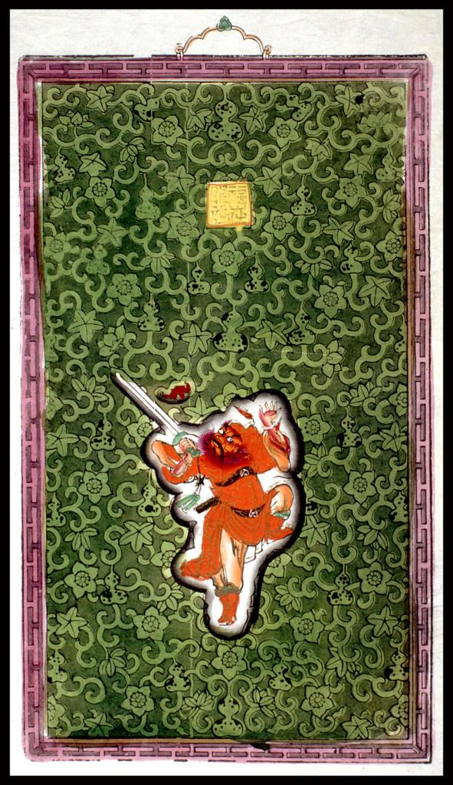
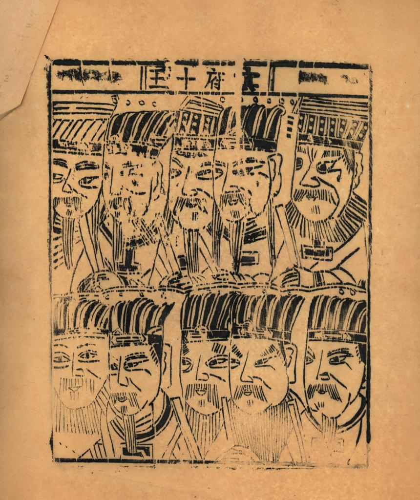

Towards an 'Omekyll':
Or, what can't Jekyll do?
#jekyll #lunr #iiif #d3 #relational-data
Objective 1:
Create a set of proof-of-concept Jekyll sites that showcase the extent of what the static site generator can do (i.e. without complex server scripts or databases!) and push those limits.
Objective 2:
Apply lessons from the these sites in prototyping an Omeka-like, modular, minimal computing multitool using Jekyll for digital exhibitions, journals, and blogs, complete with a menu of components ranging from lazy-loading carousels to IIIF manuscript manifests, dynamic client-side search to data visualizations.
v0.1 / codename: paper gods
what it is: digital (image) collection demo site
achievements unlocked: IIIF single images, IIIF manifest, tile generation from local images, client-side search, discrete jekyll collections
tools: jekyll-iiif plugin, iiif_s3,lunrjs, mirador, openseadragon
sage advice from: peter binkley, katy decorah, ray hightower
repo: /papergods_site
|
 Chinese Paper Gods @ Columbia University DLC |
 Chinese Paper Gods @ Columbia University DLC |
v0.2 / codename: butler ‘75
what it is: digital (image) collection demo site
achievements unlocked: single IIIF images from remote links (CUL DLC), auto-generation of Jekyll collection pages from data file, masonry gallery, data visualization powered by Jekyll data
tools: pagemaster, d3js, masonry
repo: /historical-photos
blog post: autogenerate-json-for-d3
v0.3 / codename: bunraku
what it is: (soon-to-be) production-ready digital collection site of images, albums, and relational cultural data
achievements unlocked: deeply relational collections, client-side advanced category search, client-side multi-language search, lazy-load image carousel, advanced data visualizations
tools: pagemaster, ipython, pandas, jq, owl carousel, d3js, lunrjs, lunr-languages
repos: /bunraku-demo, /bunraku-ipy, /bunraku-jekyll
blog series: the summer of puppets